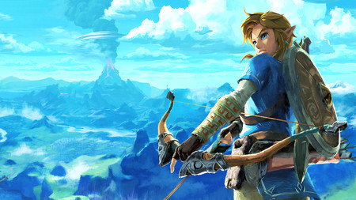

La mas reciente aventura de Link nos embarca en un viaje a lo salvaje para redescubrir el pasado y detener a calamity ganon, sigue leyendo para mas info pero ojo con los spoilers ya que esta critica va a tener unas cuantas.
Al comenzar el juego escucharemos la voz de zelda pidiendonos que abramos los ojos, despues de ver a Link en una especie de criosueño, este obtendra la tableta sheika con la cual abrira las puertas del santuario.Al salir nos toparemos con un anciano el cual nos contara que hace 100 años una entidad conocida como calamity ganon desperto y la princesa zelda y sus campeones fallarian la mision de detenerlo desembocando en un cataclismo que pondria en peligro la vida en Hyrule.Despues Link activaria un mecanismo que a su vez haria que varias torres emergerian a lo largo de Hyrule y es ahi donde se nos enconmendara la mision de detener a Calamity Ganon, y aqui empieza lo bueno.
En esta entrega fueron agregadas tanto nuevas como viejas conocidas habilidades para Link.Las mas notorias son la de saltar y escalar pendientes que son completamente nuevas de la saga, la barra de stamina regresa desde su aparicion en Skyward Sword al igual que la accion de correr y un item bastante similir a la manta de Hylia, la paravela, que nos va a ser util a lo largo de todo el juego tanto para llegar a zonas lejanas como para bajar de alturas altas sin problema.
A comparacion de otros juegos, las vestimentas toman un papel sumamente importante al igual que en tri force heroes solo que con mas variedad, ya que algunas nos daran resistencia a ciertos elementos mientras que otros nos otorgaran buffs como de ataque o mas stamina al escalar.Tambien las mazmorras han cambiado, ya que en vez de ser ocho o nueve son 120 y pasan a llamarse santuarios los cuales constan de pruebas que, al completarlas, nos otorgan un orbe y si juntamos cuatro podemos intercambiarlo por un corazon o un fragmento de stamina.
Ahora el cambio mas drastico, las armas, aqui la variedad se expande, ya que podemos encontrar tanto espadas normales, como lanzas y mazos gigantes, esto pasa tambien con los arcos y los escudos teniendo una gran variedad de ambos aunque como siempre, hay un pero, todo esto tiene un limite de uso y cuando llegue a el, el objeto en cuestion de rompera y desaparecera de nuestro inventario.Ninguno de nuestras armas, arcos y escudos es irrompible, ni siquiera el iconico escudo Hyliano, ya que este es uno de los mejores escudos del juego tiene un limite bastante alto de irrompibilidad y durara bastante, aunque al final, tambien se acabara rompiendo, igualmente, la espada maestra se puede romper, aunque mas que romper se le agota la energia y es inutilizable por un corto periodo de tiempo, asi que, no se espanten.
Se agregan poderes, en este juego existen cuatro gigantescas maquinas con distintas formas llamadas bestias divinas, las cuales eran controladas por los cuatro campeones.Daruk de la tribu goron controlaba a Vah Rudania, Revali de la tribu orni contolaba a Vah medoh, Mipha de la tribu zora piloteaba a Vah Ruta y Urobosa de la tribu gerudo a Vah Naboris, estos campeones fallarian su mision y sucumbirian ante ganon, siendo que este ultimo tomo control de las bestias y las almas de los campeones quedarian encerradas en estas, Link al derrotar a las criaturas que ganon habia dejado liberarian estas almas y estas en agradecimiento le otrogarian su poder, los cuales serian, el escudo de daruk que crea una esfera que proteje a Link de cualquier daño, la ira de Urobosa la cual permite hace que Link al cargar un ataque suelte una descarga de rayos, la furia de Revali que crearia una rafaga de viento que elevaria a Link y por ultimo la plegaria de Mipha la cual curara a Link cuando sus corazones llegan a cero

*Un vasto mundo que explorar
*Diferentes formas de jugar y pasar la aventura
*Una gran variedad de armas y objetos
*Batantes aventuras secundarias para pasar el rato y no aburrirse
*Una exelente historia que te envuelve sorprendiendote con ditintas situaciones
*Cientos de horas de diversion proporcionadas
*A comparacion de otros juegos de la saga este no tiene musica que se grabe en nuestra memoria como "song of healing" o "Gerudo Valley"
*Hay muy poca variedad de enemigos y la mayoria son solos recolores de uno, solo con un aumento de fuerza aunque bastante similiras entre si
*Exsiste cierta monotonia al completar los santuarios
*Un inventario un poco complicado ya que vas a tener que pasar varias paginas para encontrar el objeto deseado
Al se la mas reciente aventura de la saga zelda y con una secuela en camino puedo decir con seguridad que esta entrega cumplio mis expectativas e, inclusive, las supero con creces si tuvo sus errores pero no son tan grandes para decir que es un mal juego, pero tampoco podemos decir que ha sido el mejor de la saga, aun asi es un juego bastante disfrutable y lo recomiendo para aquel que tenga una Nintendo Switch u una Wii U, aparte este juego actualmente cuenta con dos DLC los cuales son "Las pruebas legendarias" que incluye un modo experto y un nuevo santuario y "La balada de los elegidos" que profundiza en la historia de los campeones y como fueron elegidos aunque estos ya va a ser tu decision comprarlos.Aun asi espero que hayas dsifrutado esta reseña y mas importante que disfrutes este juego, Hasta la proxima amigos !!.
CALIFICACION 8.0/10